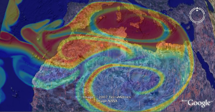

Visualization of 2D rectangular matrices in Google Earth Viewer.
Visualization of 2D rectangular matrices in Google Earth Viewer.

| kmlStr = ge_imagesc(X,Y,M) |
| kmlStr = ge_imagesc(X,Y,M,Parameter,Value) |
| kmlStr = ge_imagesc(X,Y,M) |
Visualizes gridded numerical data contained in variable 'M' at locations specified by vectors 'X' and 'Y' of size Nx1. Note that X and Y should have constant spacing to avoid distortion.
| kmlStr = ge_imagesc(X,Y,M,Parameter,Value) |
In addition to the above, this syntax also allows for specification of a number of parameters regarding the appearance of the data when viewed in Google Earth. Assigning values to the parameters can be accomplished by inclusion of an alternating sequence of parameters and their value. The table below provides an overview of the authorized options. The order in which the parameters are included does not matter. Please be aware that the options are case-sensitive. Examples are provided further down.
| Parameter | Description |
| 'alphaMatrix' | 2-D matrix specifying the alpha value for each element of 'M'. Values range from 0 (transparent) to 1 (opaque). |
| 'altitude' | Height difference relative to the plane of reference (see parameter 'altitudeMode'). |
| 'altitudeMode' | Specifies which plane of reference to use. Must be one of 'absolute', 'relativeToGround' or 'clampToGround'. |
| 'cLimHigh' | Specifies the value to which the maximum of the colorbar should apply. Default is max(M(:)). |
| 'cLimLow' | Specifies the value to which the minimum of the colorbar should apply. Default is min(M(:)). |
| 'colorMap' | Specifies the colormap to use for visualizing the grid cell colors. Default is 'jet', but any MATLAB colormap can be used. |
| 'crispFactor' | This function uses PNG image files to display matrices in GoogleEarth. However, images may appear fuzzy due to the compression applied by the GoogleEarth program. To make the image more crisp, you can increase the 'crispFactor' parameter, at the cost of slower function evaluation and generating a bigger PNG file. Also, with big matrices you may run into memory problems. Value of the 'crispFactor' parameter should be an integer larger than 0. Default is 5. |
| 'description' | A description of objects can be included using this parameter. Its value must be passed as a character array. It will be displayed in the Google Earth Viewer within a pop-up text balloon. The green ellipse in this example shows what the 'dataFormatStr' applies to. |
| 'imgURL' | A character array containing the path to the image to be created and used by ge_imagesc(). Relative paths can be used. |
| 'msgToScreen' | Defines whether verbose feedback is provided by the function when it is accessed and when it finishes. Default is false (which is equivalent to logical(0), but quicker). |
| 'name' | This character array will be used within the Google Earth Viewer 'Places' pane to identify objects. |
| 'nanValue' | Specifies which value in input variable "M" should be treated as Not-a-Number (NaN). |
| 'snippet' | A short description of the feature. In Google Earth, this description is displayed in the Places panel under the name of the feature. If a Snippet is not supplied, the first two lines of the description are used |
| 'timeSpanStart' | See Dynamic visualization. |
| 'timeSpanStop' | See Dynamic visualization. |
| 'visibility' | Whether the object is initially visible. Must be passed to ge_imagesc() as a numerical value 1 or 0. Visibility state can be changed within the Google Earth Viewer by clicking the object's checkmark in the 'Places' pane. |
| 'xResolution' | By-passes default derivation of grid x-resolution and assigns the value of this parameter to all cells instead. |
| 'yResolution' | By-passes default derivation of grid y-resolution and assigns the value of this parameter to all cells instead. |
Latitudes on the Southern hemisphere must be passed as negative values. Same for longitudes on the Western hemisphere.
Latitudes and longitudes should be passed in units of decimal degrees (also known as fractional degrees). Google Earth uses Simple Cylindrical projection (also known as Plate Carée) with a WGS84 datum.
Use imagesc() in combination with ge_colorbar() to indicate to what values the colors in a map correspond.
When you customize the appearance of the map, make sure to assign identical values to parameters 'cMap', 'cLimLow', and 'cLimHigh' in the call to ge_imagesc() and ge_colorbar().
When all values within M are identical, you should assign different values to parameters 'cLimLow' and 'cLimHigh' in the call to ge_imagesc() and ge_colorbar() to avoid a 'divideByZero' error.
See the demo file demo_ge_imagesc for more details.
The above will generate a *.kml file that looks like the image below when opened in the Google Earth viewer.

{kind=link}